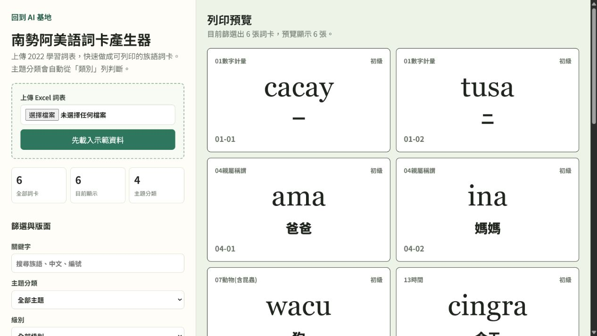

從一張詞卡開始，把族語教材做成真正能上課的工具
一張詞卡看起來很簡單，但真正要印進課堂時，欄位、篩選、版面與修改方式都不能少。
閱讀文章Calumai 部落格
記錄每個工具怎麼從一個教學問題開始，做到可以開啟、操作與帶進課堂。

一張詞卡看起來很簡單，但真正要印進課堂時，欄位、篩選、版面與修改方式都不能少。
閱讀文章文章會跟著實際開發慢慢增加，不先用空內容把版面塞滿。
準備中
從目前句、下一句、重錄標記到計時，整理錄音工具真正需要的畫面層級。
準備中
談匯入詞表、編輯資料與 AI 協作時，哪些判斷應該留在老師手上。